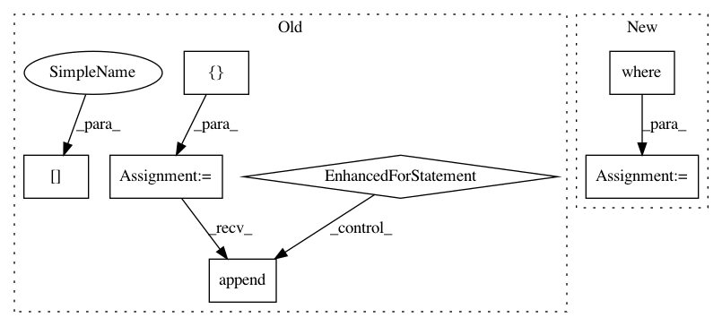

fde4b1f40f02082b56e8af3c696b3f1b0cef7fa4,src/chaospy/saltelli.py,,Sens_m_sample,#Any#Any#Any#Any#,39
Before Change
yo -= mean
yz -= mean
out = []
for d in range(dim):
index[d] = 1
yi = Y[index]-mean
s = np.mean(yo*(yi-yz), -1) / (V+(V==0))*(V!=0)
out.append(s)
index[d] = 0
return np.array(out)
def Sens_m2_sample(poly, dist, samples, rule="R"):
After Change
matrix_0 -= mean
matrix_1 -= mean
out = [
numpy.mean(matrix_1*((generator[index]-mean)-matrix_0), -1) /
numpy.where(variance, variance, 1)
for index in numpy.eye(dim, dtype=bool)
]
return numpy.array(out)
In pattern: SUPERPATTERN
Frequency: 3
Non-data size: 7
Instances
Project Name: jonathf/chaospy
Commit Name: fde4b1f40f02082b56e8af3c696b3f1b0cef7fa4
Time: 2017-09-30
Author: jonathf@gmail.com
File Name: src/chaospy/saltelli.py
Class Name:
Method Name: Sens_m_sample
Project Name: dmlc/gluon-cv
Commit Name: 5bc2c075733e672a9a7c5e14bc474788f88e90de
Time: 2019-12-06
Author: jerryzh.cn@gmail.com
File Name: gluoncv/utils/viz/mask.py
Class Name:
Method Name: expand_mask
Project Name: danforthcenter/plantcv
Commit Name: 533ff301b693aaae8d0e525bafc4d83101fe0d13
Time: 2019-04-11
Author: noahfahlgren@gmail.com
File Name: plantcv/plantcv/analyze_color.py
Class Name:
Method Name: analyze_color